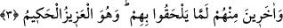

olmaları yalnız tevhid inancı içinde olmalarından ibârettir. Ama şeriatler ve dini
hükümler bakımından sapıklık içinde idiler. Allah Teâlâ Peygamberimiz hakkında bile
“Şaşırmış bulup da yol göstermedi mi?” (ed-Duha, 93/7) buyurmuştur.
Peygamberliğinden önce ondan şirk sâdır olmamış; şarap içme, zinâ, eğlence ve boş
şeylerle zaman geçirme gibi hususlar görülmemiş, herhangi bir kusur vâkı olmamış
olmasına rağmen onun hakkında böyle buyrulmuştur. Bu sebeple yukarıda hidâyette
oldukları söylenen kimselerin bir yönüyle hidâyette olmaları diğer yönüyle sapıklık
içinde bulunmalarına aykırı değildir. “Kendilerine âyetlerini okuyan” (el-Bakara,
2/129) ifâdesi bu mânâyı göstermektedir. Çünkü tilâvet, hükümleri ve şeriatleri
öğretmekle, nefislerin kötülüklerden arındırılması ve sapıklıktan mutlak mânâda
kurtarılması sağlanmıştır. Bunu böyle bilmelidir.
3. (Peygamberi) müminlerden henüz kendilerine katılmamış bulunan diğer
insanlara da göndermiştir. O, azîzdir, hakîmdir.
“(Peygamberi) “müminlerden henüz kendilerine katılmamış bulunan diğer
insanlara da göndermiştir.” Kendi zamanındaki ümmîler arasından onu peygamber
olarak gönderdi. Diğer insanlara da onu göndermiştir demektir. Yahut onlara ve
onlardan başkalarına öğretir demektir. Onlar da araplardan gelecek olanlardır. Arap
olanlardan ve olmayanlardan ümmîlere peygamber göndermiştir.
Kâşifî demiştir ki: “Söylenenlerin en doğrusu şudur ki, Hz. Peygamber (s.a.)’in
vefatından sonra İslam’a girmiş olanlar ve girmeye devam eden kimseler
kasdedilmektedir.”
Bu durumda kıyâmete kadar arap olsun olmasın sâlih amel işleyen bütün müslümanlar
bu kapsama dâhil olur. Hadis-i şerifte Peygamberimiz (a.s.): “Şüphesiz ki, benim
ümmetimden olan birtakım erkeklerin sulblerinden gelecek erkekler ve kadınlar
vardır ki, hesabsız olarak cennete gireceklerdir”buyurdu ve bu âyet-i kerîmeyi okudu.
[121]
“Kendilerine katılmamış” yâni ümmîlere henüz katılmamış ve onların çağında
olmayan, ama ileride onlara katılacak olanlardır. Bunlar onlardan sonra gelecek olan
araplar ve arap olmayanlardır. Âyet-i kerîme’de “Ve ben, Rabbim sana (ettiğim) duâ
sâyesinde hiç bedbaht olmadım.” (Meryem, 19/4) buyurulmuştur. “İnsanın
üzerinden, henüz kendisinin anılan bir şey olmadığı uzun bir süre geçmedi mi?”
(el-İnsân, 76/1) âyet-i kerîmesinde buyrulduğu gibi geçmişe âid olan olumsuzluğunu hal
ile ilgisinin kesilmesine de ihtimal vardır. Bu sebeple, “değil idi, sonra oldu.” demek
mümkündür, ama, “hiç olmadı, sonra oldu” denemez. Ancak, “hiç olmadı, ama bazan
olur” denebilir.